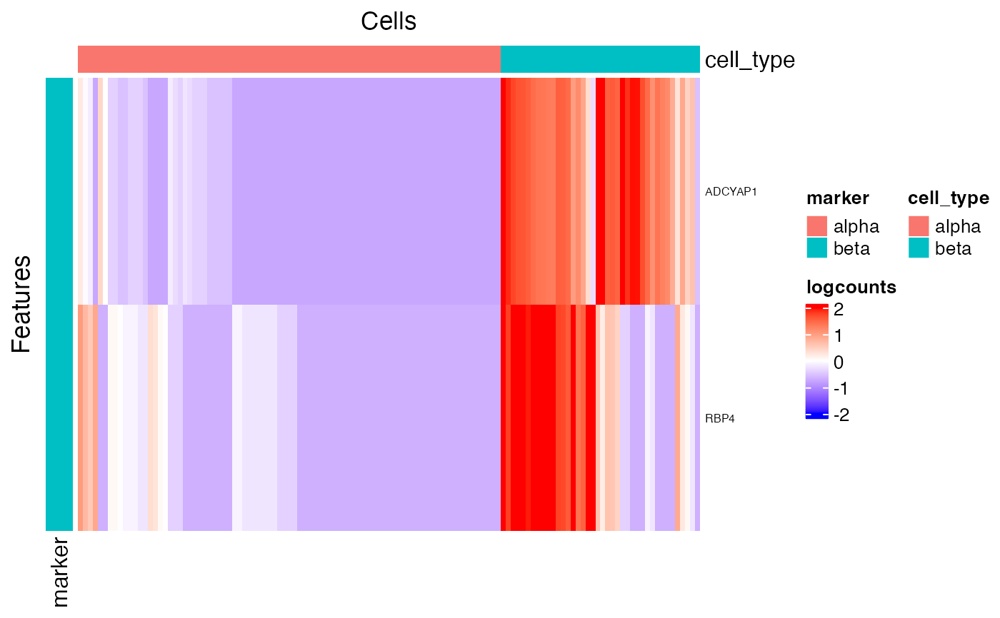

runFindMarkerR/plotFindMarkerHeatmap.R
plotFindMarkerHeatmap.RdThis function will first reads the result saved in
metadata slot, named by "findMarker" and generated by
runFindMarker. Then it do the filtering on the statistics
based on the input parameters and get unique genes to plot. We choose the
genes that are identified as up-regulated only. As for the genes identified
as up-regulated for multiple clusters, we only keep the belonging towards the
one they have the highest Log2FC value.
In the heatmap, there will always be a cell annotation for the cluster
labeling used when finding the markers, and a feature annotation for which
cluster each gene belongs to. And by default we split the heatmap by these
two annotations. Additional legends can be added and the splitting can be
canceled.
plotFindMarkerHeatmap(
inSCE,
orderBy = "size",
log2fcThreshold = 1,
fdrThreshold = 0.05,
minClustExprPerc = 0.7,
maxCtrlExprPerc = 0.4,
minMeanExpr = 1,
topN = 10,
decreasing = TRUE,
rowLabel = TRUE,
rowDataName = NULL,
colDataName = NULL,
featureAnnotations = NULL,
cellAnnotations = NULL,
featureAnnotationColor = NULL,
cellAnnotationColor = NULL,
colSplitBy = NULL,
rowSplitBy = "marker",
rowDend = FALSE,
colDend = FALSE,
title = "Top Marker Heatmap",
...
)
plotMarkerDiffExp(
inSCE,
orderBy = "size",
log2fcThreshold = 1,
fdrThreshold = 0.05,
minClustExprPerc = 0.7,
maxCtrlExprPerc = 0.4,
minMeanExpr = 1,
topN = 10,
decreasing = TRUE,
rowDataName = NULL,
colDataName = NULL,
featureAnnotations = NULL,
cellAnnotations = NULL,
featureAnnotationColor = NULL,
cellAnnotationColor = NULL,
colSplitBy = NULL,
rowSplitBy = "marker",
rowDend = FALSE,
colDend = FALSE,
title = "Top Marker Heatmap",
...
)SingleCellExperiment inherited object.
The ordering method of the clusters on the splitted heatmap.
Can be chosen from "size" or "name", specified with vector of
ordered unique cluster labels, or set as NULL for unsplitted heatmap.
Default "size".
Only use DEGs with the absolute values of log2FC
larger than this value. Default 1
Only use DEGs with FDR value smaller than this value.
Default 0.05
A numeric scalar. The minimum cutoff of the
percentage of cells in the cluster of interests that expressed the marker
gene. Default 0.7.
A numeric scalar. The maximum cutoff of the
percentage of cells out of the cluster (control group) that expressed the
marker gene. Default 0.4.
A numeric scalar. The minimum cutoff of the mean
expression value of the marker in the cluster of interests. Default 1.
An integer. Only to plot this number of top markers for each
cluster in maximum, in terms of log2FC value. Use NULL to cancel the
top N subscription. Default 10.
Order the cluster decreasingly. Default TRUE.
TRUE for displaying rownames of inSCE, a
rowData variable to use other feature identifiers, or a vector for
customized row labels. Use FALSE for not displaying. Default
TRUE.
character. The column name(s) in rowData that need
to be added to the annotation. Default NULL.
character. The column name(s) in colData that need
to be added to the annotation. Default NULL.
data.frame, with rownames containing
all the features going to be plotted. Character columns should be factors.
Default NULL.
data.frame, with rownames containing
all the cells going to be plotted. Character columns should be factors.
Default NULL.
A named list. Customized color settings for
feature labeling. Should match the entries in the featureAnnotations
or rowDataName. For each entry, there should be a list/vector of
colors named with categories. Default NULL.
A named list. Customized color settings for
cell labeling. Should match the entries in the cellAnnotations or
colDataName. For each entry, there should be a list/vector of colors
named with categories. Default NULL.
character vector. Do semi-heatmap based on the grouping of
this(these) annotation(s). Should exist in either colDataName or
names(cellAnnotations). Default is the value of cluster in
runFindMarker when orderBy is not NULL, or
NULL otherwise.
character vector. Do semi-heatmap based on the grouping of
this(these) annotation(s). Should exist in either rowDataName or
names(featureAnnotations). Default "marker", which indicates an
auto generated annotation for this plot.
Whether to display row dendrogram. Default FALSE.
Whether to display column dendrogram. Default FALSE.
Text of the title, at the top of the heatmap. Default
"Top Marker Heatmap".
Other arguments passed to plotSCEHeatmap.
A Heatmap object
data("sceBatches")
logcounts(sceBatches) <- log1p(counts(sceBatches))
sce.w <- subsetSCECols(sceBatches, colData = "batch == 'w'")
sce.w <- runFindMarker(sce.w, method = "wilcox", cluster = "cell_type")
#> Wed Apr 23 11:39:16 2025 ... Identifying markers for cluster 'beta', using DE method 'wilcox'
#> Wed Apr 23 11:39:16 2025 ... Identifying markers for cluster 'alpha', using DE method 'wilcox'
#> Wed Apr 23 11:39:17 2025 ... Organizing findMarker result
plotFindMarkerHeatmap(sce.w)
